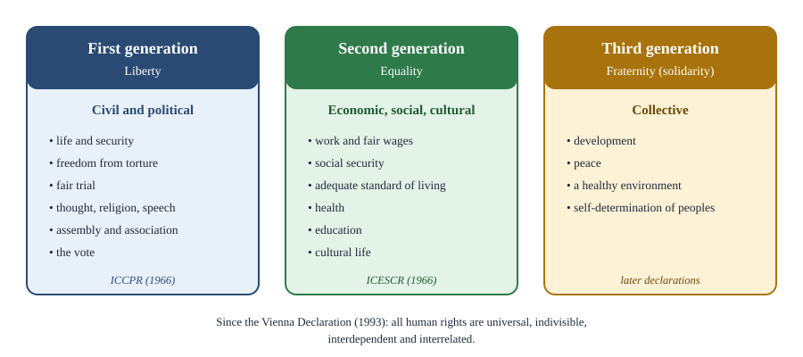

Chapter 7: Rights¶
What rights are, where they come from, and what they demand of others
Learning outcomes
When you have finished this chapter you should be able to:
- define a right and distinguish moral from legal rights;
- use Hohfeld's four categories (claims, liberties, powers and immunities) to analyse a right;
- compare the will (choice) theory and the interest theory of rights;
- trace the idea of natural rights from Locke to the declarations of the eighteenth century, and state the criticisms of Bentham, Burke and Marx;
- distinguish negative and positive rights and the three "generations" of rights;
- discuss the relation between rights and duties, conflicts of rights, and group rights.
7.1 The language of rights¶
Modern politics is full of rights: the right to life, to free speech, to vote, to education, to food, to a clean environment, to privacy. Many political demands are made in this language. A group that wants something from the state does not usually say "it would be good if we had it"; it says "we have a right to it". Why is the language of rights so powerful, and what exactly is being claimed?
A right is a justified claim or entitlement that a person holds, which others are required to respect. To have a right is to be in a position to demand something as one's due, not merely to hope for it as a favour. If I have a right to something, others who fail to respect it do not merely act badly; they wrong me. Rights thus have three features that distinguish them from other moral considerations.
- They belong to someone. A right has a holder, who is wronged when it is violated.
- They correspond to duties of others. If I have a right to life, others have a duty not to kill me.
- They carry special weight. Rights cannot be overridden simply because overriding them would produce slightly better results overall. Ronald Dworkin captured this with the phrase rights as trumps: in a card game a trump beats any card of an ordinary suit, and a right beats ordinary considerations of general welfare.
Moral and legal rights¶
- A legal right is one recognised and enforced by a legal system. Whether someone has a legal right is a question of fact about the law: what the statute, constitution or court decision says.
- A moral right is one that a person has according to sound moral principles, whether or not the law recognises it. Slaves had a moral right to freedom even when the law denied it.
Much political argument is about turning moral rights into legal ones. Many rights now in constitutions, such as equal citizenship for women or the abolition of untouchability, began as moral claims made against the law of the time.
7.2 The structure of rights: Hohfeld¶
The American legal theorist Wesley Newcomb Hohfeld, in work published in 1913 and 1917, showed that the word "right" is used for four quite different relations. His analysis is still the standard tool for clarifying what a right involves.
| Hohfeldian element | Meaning | Correlative (what others have) | Example |
|---|---|---|---|
| Claim (claim-right) | A is owed something by B | B has a duty to A | A has a claim that B repay the loan |
| Liberty (privilege) | A is free to do something; A has no duty not to | B has no claim that A not do it | A is at liberty to wear a red shirt |
| Power | A can change legal relations | B has a liability to have them changed | A can sell her house, transferring ownership |
| Immunity | B cannot change A's legal relations | B has a disability | Parliament cannot by ordinary law abolish a constitutional right |
Table 7.1. Hohfeld's four elements of rights.
Most important rights are bundles of these elements. The right of ownership of a book includes a liberty to read it, a claim that others not take it, a power to sell or give it away, and an immunity from having it taken without due process. The right to free speech includes a liberty to speak, a claim that the state not punish one for speaking, and (in a constitutional democracy) an immunity against ordinary legislation abolishing it.
Worked example 7.1: Analysing a right
Right. "Every citizen has the right to vote."
Analysis. The citizen has a liberty to vote or not (no duty to vote, unless voting is compulsory); a claim against election officials that they register her, give her a ballot and count her vote, with corresponding duties on them; a power, together with other voters, to change who holds office; and, in a constitutional system, an immunity: the legislature cannot remove the right by ordinary law. Saying exactly which elements are meant clarifies disputes. For example, an argument that compulsory voting violates the right to vote is really a claim that the right includes a liberty not to vote.
7.3 Two theories of what rights do¶
Why do people have rights at all? Two theories dominate.
The will (choice) theory¶
The will theory, defended by H. L. A. Hart and others, holds that the function of a right is to give the right-holder control over another's duty. To have a right is to be a "small-scale sovereign": you may demand that the duty be performed, waive it, or enforce it. If B promises to help A move house, A has a right because A can release B from the promise or insist on it.
Strength: it explains why rights are bound up with freedom and choice, and why right-holders can waive their rights.
Weakness: it seems to deny rights to beings who cannot exercise choice, such as infants, people in a coma or animals; yet we think infants have a right not to be tortured. It also has difficulty with rights that cannot be waived: most legal systems do not let people sell themselves into slavery.
The interest (benefit) theory¶
The interest theory, defended by Joseph Raz, Neil MacCormick and others, holds that the function of a right is to protect an interest of the right-holder. On Raz's definition, X has a right if an aspect of X's well-being (interest) is a sufficient reason for holding some other person to be under a duty.
Strength: it explains the rights of infants and others who cannot choose, and inalienable rights.
Weakness: it may be too broad, since many people benefit from duties without having rights (if A promises B to look after B's elderly mother, the mother benefits, but it is B who seems to hold the right). Will theorists also say it loses the special connection between rights and autonomy.
Key idea
A right is a justified entitlement that imposes duties on others and carries special weight. The will theory says rights give holders control over others' duties; the interest theory says rights protect holders' important interests.
7.4 Natural rights and their critics¶
Natural rights¶
The idea that people have rights simply by virtue of being human, independently of any law or government, is the idea of natural rights. It grew from the medieval tradition of natural law and became central in the seventeenth century. John Locke argued that people have natural rights to life, liberty and property that exist in the state of nature and that government is instituted to protect (Chapter 2).
These ideas inspired two famous declarations. The American Declaration of Independence (1776) held it self-evident that all men are created equal and endowed with certain unalienable rights, among them life, liberty and the pursuit of happiness, and that governments are instituted to secure these rights. The French Declaration of the Rights of Man and of the Citizen (1789) declared that men are born and remain free and equal in rights, and named the natural and imprescriptible rights of man as liberty, property, security and resistance to oppression.
The universal language of these declarations contrasted sharply with practice: the American republic kept slavery, and neither declaration extended equal rights to women. Critics used the declarations' own principles against these exclusions. In France, Olympe de Gouges wrote a Declaration of the Rights of Woman and of the Female Citizen (1791); in England, Mary Wollstonecraft wrote A Vindication of the Rights of Woman (1792).
Three classic criticisms¶
Bentham. The utilitarian Jeremy Bentham rejected natural rights altogether. Real rights, he argued, are created by law; a "natural right" is a right without a law, a contradiction. In a pamphlet written in the 1790s against the French declaration (published later as Anarchical Fallacies), he called natural rights "simple nonsense" and natural and imprescriptible rights "rhetorical nonsense, nonsense upon stilts". He also feared that absolute natural rights would encourage people to resist any law they disliked.
Burke. The conservative Edmund Burke, in Reflections on the Revolution in France (1790), did not deny that people have rights, but he preferred the concrete, inherited rights of Englishmen, built up over centuries, to abstract rights derived from reason. Abstract rights, he argued, ignore circumstances, invite endless claims and justify the destruction of institutions that actually protect liberty.
Marx. In On the Jewish Question (1844), Karl Marx argued that the rights of man proclaimed in the French declarations were the rights of egoistic man, separated from other men and from the community. The right of property is the right to use one's possessions without regard to others; liberty is the liberty of man as an isolated monad. Such rights achieved political emancipation (freeing the state from religion and privilege) but not human emancipation, which would require overcoming the division between the political citizen and the self-interested member of market society.
Rights without "nature"¶
Many modern theorists defend human rights without relying on a contested metaphysics of nature. Some ground them in human dignity or basic human needs; some in the conditions of agency (what any agent needs in order to act purposefully); some in the requirements of a decent political order. Others treat human rights as a practical, political agreement among people of different traditions, as the drafters of the Universal Declaration of Human Rights did in 1948 (Chapter 14).
7.5 Negative and positive rights; generations of rights¶
Negative and positive rights¶
- A negative right is a right that others refrain from doing something to the holder: not to kill, torture, imprison arbitrarily or censor. It imposes duties of non-interference.
- A positive right is a right that others provide something: education, health care, a minimum income, legal aid. It imposes duties of assistance.
Some libertarians argue that only negative rights are genuine rights, because they can always be satisfied together (everyone can refrain from killing everyone else at once), cost nothing and do not require taking from some to give to others. Positive rights, they say, depend on resources, conflict with each other and involve coercing some to serve others.
Critics answer that the distinction is less sharp than it seems. Henry Shue, in Basic Rights (1980), argued that every right involves several kinds of duty: to avoid depriving, to protect from deprivation, and to aid the deprived. Protecting even "negative" rights, such as the right not to be assaulted, requires police, courts and prisons, all paid for by taxes. And security and subsistence, Shue argued, are equally basic, because without them no other right can be enjoyed.
Generations of rights¶
In 1977 the jurist Karel Vasak proposed dividing human rights into three "generations", loosely matching the French revolutionary ideals of liberty, equality and fraternity.

- First generation: civil and political rights. Life, liberty, security of the person, freedom from torture and slavery, fair trial, freedom of thought, religion, expression and assembly, and the right to vote. Many are negative rights. They are set out in the International Covenant on Civil and Political Rights (1966).
- Second generation: economic, social and cultural rights. Work, fair wages, social security, an adequate standard of living, health, education and participation in cultural life. Many are positive rights. They are set out in the International Covenant on Economic, Social and Cultural Rights (1966), which asks states to realise them progressively to the maximum of their available resources.
- Third generation: solidarity rights. Rights to development, peace, a healthy environment and self-determination of peoples. Many are held collectively.
The scheme is a useful teaching device, but it should not be taken too literally. The "generations" did not arise in strict order, and international human rights law since the World Conference on Human Rights in Vienna (1993) has insisted that all human rights are universal, indivisible, interdependent and interrelated. The right to vote means little to someone without education; the right to food is easier to secure where there is a free press to expose famine. Sen famously argued that no substantial famine has ever occurred in a functioning democracy with a relatively free press.
Rights in the Constitution of India
The Constitution of India reflects the distinction between kinds of rights. Part III (Fundamental Rights) lists mainly civil and political rights, which are justiciable: they can be enforced in the courts. Part IV (Directive Principles of State Policy) lists many economic and social goals, such as the right to work, to education and to public assistance, which are declared fundamental in the governance of the country but are not enforceable by any court. Over time the Supreme Court has read some of these goals into the right to life under Article 21, and the right to education for children aged six to fourteen was made a Fundamental Right in Article 21A by the 86th Amendment (2002).
7.6 Rights and duties¶
Rights and duties are closely linked, in two different ways.
- Correlativity. Every claim-right of one person corresponds to a duty of another (Hohfeld). My right not to be assaulted is your duty not to assault me.
- Reciprocity. Some argue that those who claim rights must also accept duties: to obey just laws, to pay taxes, to respect others' rights, to contribute to the community. On this view rights are part of a social relationship of mutual obligation.
The second idea is contested. If rights depended on performing duties, then people who fail in their duties (prisoners, the idle) might lose their rights, including basic human rights. Most theorists hold that human rights are not conditional on good behaviour, while some civic rights may reasonably be linked to responsibilities.
Indian thought has often emphasised duty (dharma) more than rights. Gandhi argued that rights flow from duties well performed: the true source of rights is duty, and if we all discharge our duties, rights will not be far to seek. The Constitution of India added a list of Fundamental Duties (Article 51A) by the 42nd Amendment (1976). Critics of duty-centred approaches worry that they can be used to make people's rights depend on the state's judgement of their conduct; defenders reply that a society of rights-claimers without a sense of obligation cannot sustain itself.
7.7 Conflicts of rights and group rights¶
Conflicts¶
Rights can conflict. A newspaper's right to free expression may conflict with a person's right to privacy; a religious group's freedom of religion may conflict with the right of its members to equal treatment; a property owner's rights may conflict with tenants' right to housing. Theories handle conflicts in different ways.
- Some rank rights in a hierarchy (Rawls gives basic liberties priority over economic advantages).
- Some argue that apparent conflicts disappear when rights are properly specified: the right to free speech never included a right to defame.
- Many courts use balancing or proportionality: a restriction of one right is permissible if it pursues a legitimate aim, is suitable and necessary to achieve it, and does not impose a burden disproportionate to the benefit.
Worked example 7.2: A conflict of rights
Situation. A magazine plans to publish photographs of a well-known film actor taken secretly inside his home. The actor seeks to stop publication.
Analysis. The magazine invokes freedom of the press; the actor invokes privacy. A proportionality approach asks: does publication serve a legitimate public interest (such as exposing wrongdoing by a public official) or merely satisfy curiosity? Is there a less intrusive way of serving any public interest? Most legal systems would protect the actor here, because the intrusion is serious and the public interest weak. If the photographs showed him committing a crime relevant to public safety, the balance might shift.
Group rights¶
Are there rights held by groups rather than individuals? Examples include the right of peoples to self-determination, the rights of indigenous peoples to their lands, and the right of religious or linguistic minorities to run their own educational institutions (protected in India by Article 30).
- Defenders, such as Will Kymlicka (Multicultural Citizenship, 1995), argue that some goods, such as a living culture or language, are inherently shared and can be protected only collectively, and that minority cultures need protection against assimilation by the majority. Kymlicka distinguished external protections (which protect a group against pressure from the wider society, and which he supported) from internal restrictions (which limit the freedom of the group's own members, and which he opposed).
- Critics argue that only individuals have moral standing, so that "group rights" are best understood as individual rights exercised together; and they worry that group rights can empower traditional leaders to oppress dissenters, women or other vulnerable members within the group.
Summary
- A right is a justified entitlement that belongs to a holder, imposes duties on others and carries special weight (Dworkin's "rights as trumps"). Rights may be moral or legal.
- Hohfeld distinguished claims (with correlative duties), liberties, powers and immunities; most rights are bundles of these.
- The will theory says rights give their holders control over others' duties; the interest theory says rights protect important interests.
- Natural rights (Locke) inspired the American (1776) and French (1789) declarations. Bentham called natural rights "nonsense upon stilts"; Burke preferred inherited rights; Marx saw them as the rights of egoistic man.
- Negative rights require non-interference, positive rights require provision; Shue argued that all rights involve both kinds of duty. Vasak's three generations are civil and political, economic and social, and solidarity rights, but human rights are indivisible.
- Rights correlate with duties; whether they depend on performing duties is contested. Conflicts of rights are often resolved by proportionality. Group rights protect shared goods but raise concerns about internal restrictions.
7.8 Exercises¶
Exercise 1
Distinguish moral from legal rights and give an example of a moral right that was once not a legal right.
Answer
A legal right is recognised and enforced by a legal system; a moral right is held according to sound moral principles whether or not the law recognises it. Example: the right of women to vote was a moral right before it was recognised in law (in many countries only in the twentieth century); so was the right of enslaved people to freedom.
Exercise 2
Using Hohfeld's categories, analyse a person's right to make a will leaving her property to whomever she chooses.
Answer
It is mainly a power: she can change legal relations by creating new ownership rights for her beneficiaries, who have a corresponding liability to have their legal position changed. It includes a liberty to choose any beneficiary (no duty to choose a particular one, subject to the law of the land), a claim that courts and executors respect the will, and possibly an immunity against others altering it.
Exercise 3
Why does the will theory have difficulty with the rights of infants? How does the interest theory deal with them?
Answer
On the will theory a right gives its holder control (to waive or enforce) over another's duty. Infants cannot exercise such choices, so the theory seems to imply that they have no rights, which is counter-intuitive. The interest theory says a right exists where a person's interest is sufficient reason to impose a duty on others; infants have strong interests (in not being harmed, in being fed), so they have rights, which others may enforce on their behalf.
Exercise 4
State Bentham's, Burke's and Marx's criticisms of natural rights in one sentence each.
Answer
Bentham: rights are created by law, so "natural rights" are nonsense, and natural and imprescriptible rights "nonsense upon stilts". Burke: abstract rights derived from reason ignore circumstances and are inferior to concrete rights inherited through tradition. Marx: the rights of man are the rights of egoistic man separated from community, giving political but not human emancipation.
Exercise 5
Explain Shue's argument against a sharp distinction between negative and positive rights.
Answer
Shue argued that every right involves three kinds of duty: to avoid depriving, to protect against deprivation and to aid the deprived. Even "negative" rights such as security require positive action and resources (police, courts), while "positive" rights such as subsistence also involve duties not to deprive. Security and subsistence are both basic rights, since without them no other right can be enjoyed.
Exercise 6
What does it mean to say that human rights are "indivisible"? Give an example of how one kind of right depends on another.
Answer
It means that civil and political rights and economic, social and cultural rights form a single whole: none can be fully enjoyed without the others, and none should be ranked as optional. Example: the right to vote is hard to use meaningfully without education; conversely, the right to food is better protected where free speech and a free press expose hunger and press governments to act.
Exercise 7
Distinguish Kymlicka's external protections from internal restrictions, with an example of each.
Answer
External protections protect a minority group against pressure from the wider society, for example guaranteed funding for schools teaching in a minority language. Internal restrictions limit the liberty of the group's own members in the name of tradition, for example a rule preventing members from leaving the group or women from inheriting property. Kymlicka supported the first, under conditions, and opposed the second.
7.9 Quiz¶
Check yourself: rights
Exercise 1
Match each Hohfeldian element with its correlative.
| A | B |
|---|---|
| Claim | Liability |
| Liberty | Disability |
| Power | Duty |
| Immunity | No-claim |
Answer
Claim — Duty; Liberty — No-claim; Power — Liability; Immunity — Disability
Exercise 2
Who described rights as trumps?
- Hart
- Dworkin
- Raz
- Bentham
Answer
Dworkin
Exercise 3
The theory that rights protect important interests of the right-holder is associated with
- Hart
- Raz
- Burke
- Vasak
Answer
Raz
Exercise 4
Who called natural and imprescriptible rights "nonsense upon stilts"?
- Burke
- Marx
- Bentham
- Locke
Answer
Bentham
Exercise 5
Economic, social and cultural rights belong to which "generation" in Vasak's scheme?
- First
- Second
- Third
- None
Answer
Second
Exercise 6
In which year were the two International Covenants on human rights adopted?
Answer
1966
Exercise 7
Which article of the Constitution of India lists Fundamental Duties?
- Article 21A
- Article 32
- Article 51A
- Article 368
Answer
Article 51A